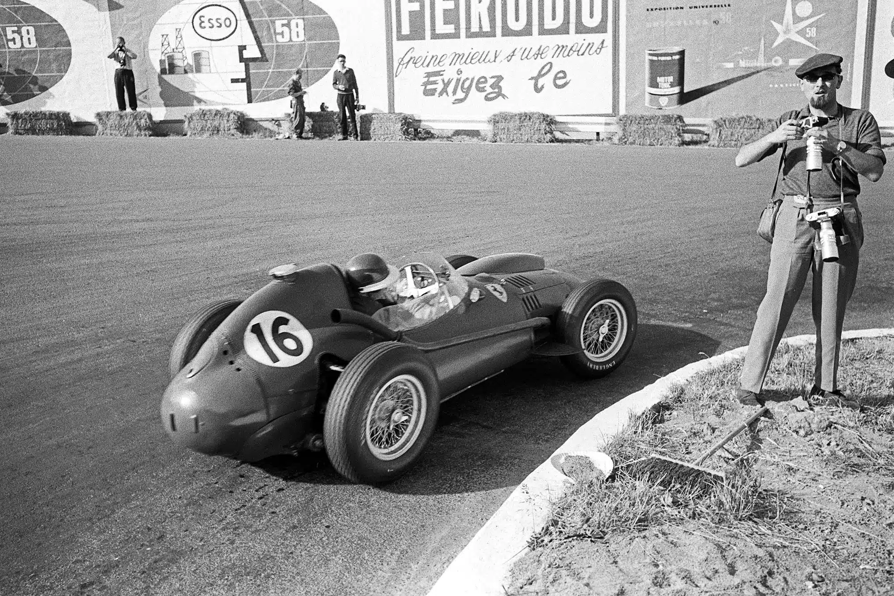
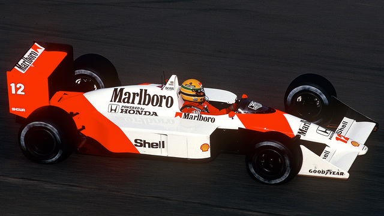
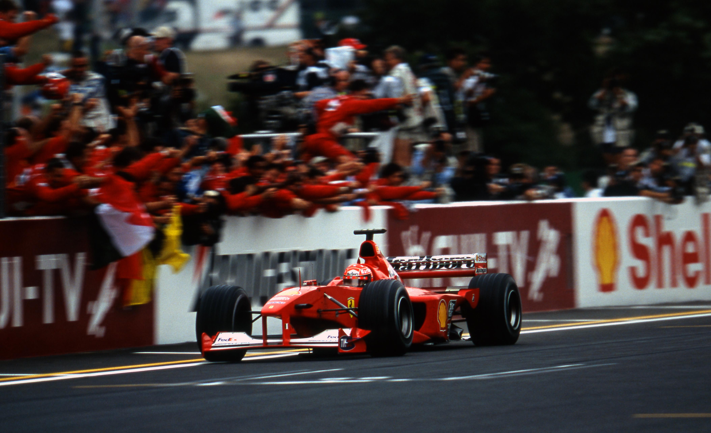

Tracing the evolution of Formula 1 through its greatest moments.
1950
First Official Formula 1 World Championship
The year 1950 marked the official birth of Formula 1 as a global
sport. The inaugural race took place at Silverstone in England on
May 13, where an estimated 120,000 spectators attended. This new
World Championship brought together seven races across Europe—six
Grand Prix events plus the Indianapolis 500—uniting drivers,
teams, and manufacturers under a single international competition
for the very first time.
1958
Introduction of Constructors' Championship
In 1958, Formula 1 expanded its competitive spirit by introducing
the Constructors' Championship, giving teams their own title to
fight for alongside the Drivers' Championship. While individual
drivers had been the sole focus since 1950, the new championship
recognized the crucial role of engineering, innovation, and
teamwork in achieving success on the track.

1967
Rise of Modern Car Technology
In 1967, Formula 1 entered a new era as major advances in car
design reshaped the sport. Aerodynamic wings were introduced,
giving cars greater downforce and stability at high speeds, while
powerful new engine developments pushed performance to
unprecedented levels. These innovations transformed Formula 1
machines into much faster and more technically advanced cars,
setting the stage for the modern era of racing.
1976
Lauda vs. Hunt Rivalry
The 1976 season became one of Formula 1's most dramatic
storylines, defined by the fierce rivalry between Niki Lauda and
James Hunt. After suffering a near-fatal crash at the Nürburgring,
Lauda made a miraculous recovery, returning to race just six weeks
later. His battle with Hunt went down to the final race, with Hunt
narrowly securing the championship, cementing the season as one of
the sport's most legendary duels.
1988
McLaren Dominance
In 1958, Formula 1 expanded its competition by creating the
Constructors' Championship, giving teams their own title alongside
the Drivers' Championship. The new award highlighted the
importance of engineering, innovation, and teamwork, ensuring that
success was measured not only by individual drivers but also by
the strength of the cars and teams behind them.

1994
Safety Reforms After Imola
The 1994 season was marked by tragedy at Imola, where Ayrton Senna
and Roland Ratzenberger lost their lives in separate accidents. In
response, Formula 1 undertook sweeping safety reforms, introducing
stricter car regulations, track modifications, and new medical
standards. These changes reshaped the sport, placing driver
protection at the forefront of Formula 1's future.
2000
Schumacher Era Begins
In 2000, Michael Schumacher captured his first World Championship
with Ferrari, ending the team's long title drought. This victory
marked the beginning of an era of dominance, as Schumacher and
Ferrari went on to win five consecutive Drivers' and Constructors'
Championships, cementing one of the most successful partnerships
in Formula 1 history.

2008
Hamilton's First Title
The 2008 season ended with one of the most dramatic finishes in
Formula 1 history, as Lewis Hamilton secured his first World
Championship on the final lap in Brazil. At just 23 years old, he
became the youngest champion at the time, marking the beginning of
a record-breaking career.
2014
Hybrid Era
Formula 1 entered a new chapter in 2014 with the introduction of
1.6-liter turbo-hybrid engines, combining efficiency with
cutting-edge technology. Mercedes quickly established dominance,
with Lewis Hamilton leading the charge, beginning a run that would
define the modern era of the sport.
2021
Verstappen vs. Hamilton Showdown
The 2021 season delivered one of the most intense title fights in
Formula 1 history, as Max Verstappen and Lewis Hamilton battled
wheel-to-wheel across the year. Their rivalry came to a dramatic
conclusion in Abu Dhabi, where a late safety car and controversial
restart set up a last-lap showdown. Verstappen overtook Hamilton
to win his first World Championship, sparking debate and cementing
the season as one of the sport's most unforgettable.
2022
New Car Regulations
The 2022 season marked the arrival of a new generation of Formula
1 cars, with ground-effect aerodynamics returning for the first
time since the 1980s. These sweeping regulation changes aimed to
reduce turbulent air and allow closer wheel-to-wheel racing,
improving the spectacle on track. The fresh designs not only
reshaped the cars' look but also redefined strategy and
performance, ushering in a new era of competition.
2026
Next-Gen Power Units
The 2026 regulations will introduce a new generation of Formula 1
cars, featuring lighter designs, increased electrical power, and
100% sustainable fuels. These next-gen power units aim to improve
efficiency and cut emissions while keeping the speed and spectacle
of Formula 1 intact. With manufacturers embracing the shift, the
changes are set to shape the future of racing both on and off the
track.